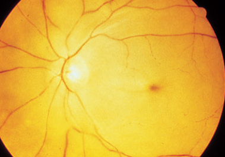
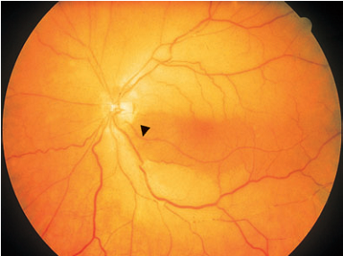
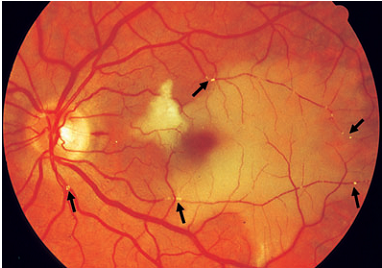

Central retianal artery occlusion (CRAO)
* Định nghĩa:
+ Tắc động mạch trung tâm võng mạc là hiện tượng nhồi máu võng mạc do tắc nghẽn một động mạch ở lá sàng hoặc một nhánh động mạch.
+ Bệnh nguyên thường do thuyên tắc mạch (xem bảng dưới). Nguyên nhân do viêm ít gặp hơn như bệnh viêm động mạch thái dương (Viêm động mạch Horton). Bệnh lý này nên được nghĩ đến khi tắc động mạch võng mạc kết hợp với đau đầu.
Loại thuyên tắc
Nguồn gốc gây bệnh
Emboli canxi Động mạch cảnh hoặc van tim Emboli cholesterol Động mạch cảnh Thrombocyte-fibrin emboli Sợi xơ ở tâm nhĩ, nhồi máu cơ tim hoặc vì phẫu thuật tim Emboli u niêm (myxoma) U niêm tâm nhĩ (bệnh nhân trẻ) Vi khuẩn hoặc nấm (Roth spots) Viêm nội taam mạc và nhiễm trùng máu
* Triệu chứng:
+ Bệnh nhân báo cáo về giảm thị lực đột ngột một mắt mà không có triệu chứng đau.
+ Ở trường hợp tắc nhánh động mạch thì thị lực giảm hoặc khuyết thị trường
+ Dấu "Cherry-red spot": khi tắc động mạch võng mạc cấp tính, võng mạc có màu trắng xám, phù lớp sợi thần kinh thị, mất độ trong suốt. Chỉ duy nhất tại vùng hoàng điểm trung tâm không chứa những sợi thần kinh nên vẫn nhìn thấy "màu đỏ anh đào" là màu của lớp màng mạch bên dưới.
+ Động mạch đứt đoạn
+ Khuyết đường phản xạ hướng tâm đồng tử
+ Teo thị thần kinh ở những trường hợp tắc động mạch võng mạc mạn tính

Hình: Tắc động mạch võng mạc - hoàng điểm đỏ anh đào = "Cherry-red spot"

Hình: CRAO, nhưng vẫn còn một vùng võng mạc được sự tưới máu của động mạch mi võng mạc (mũi tên)

Hình: Tắc nhánh động mạch nhiều vị trí